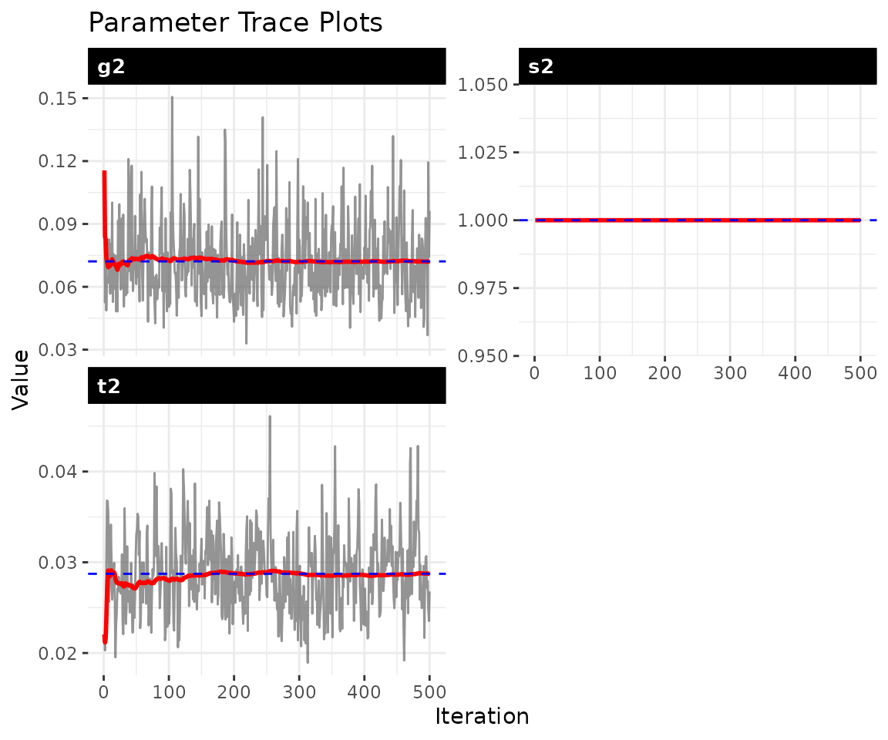
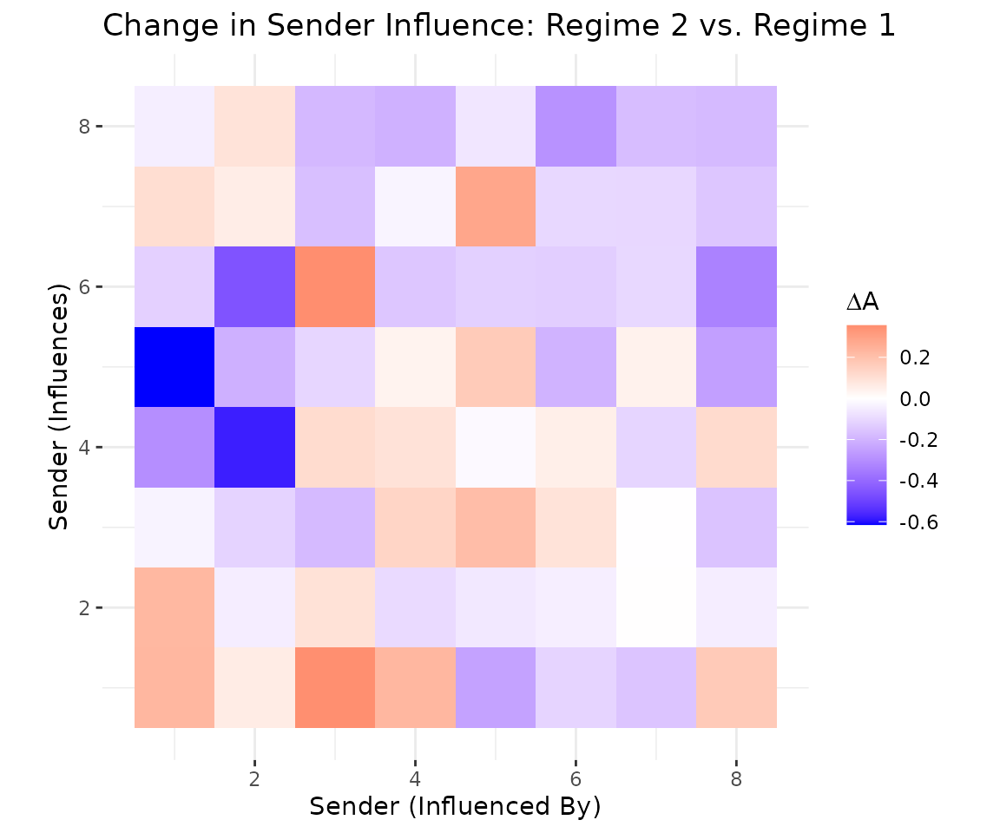

Piecewise-static models for structural change
Shahryar Minhas
2026-03-29
Source:vignettes/piecewise_dbn.Rmd
piecewise_dbn.Rmd1 Overview
Many political processes exhibit structural breaks, discrete moments when the rules governing network dynamics fundamentally change. The 2008 financial crisis reshuffled economic dependencies. The Arab Spring reorganized regional alliance patterns. A leadership transition can redirect a country’s foreign policy overnight.
The piecewise-static model handles this setting: you specify when breaks occurred and the model estimates how the influence structure differed across regimes. It fits block-constant influence matrices and for each regime :
The piecewise model sits between the static and dynamic extremes. It trades the time-point-level precision of the dynamic model for interpretability (each regime has a single, directly comparable influence matrix) and computational efficiency (estimating matrices instead of ).
| Consideration | Piecewise | Dynamic |
|---|---|---|
| Breaks are discrete and known | X | |
| Influence evolves smoothly | X | |
| Comparing pre/post periods | X | |
| Want interpretable regime summaries | X | |
| Memory constraints (large networks) | X | |
| Need time-point-specific estimates | X |
2 Simulate data with a structural break
We simulate a network where the influence structure changes at a
known break point, then check whether the model recovers the difference.
The blocks argument specifies the ending time index of each
block: block 1 covers
to 15, block 2 covers
to 30.
sim = simulate_piecewise_dbn(
n = 8,
time = 30,
blocks = c(15, 30),
p = 1,
sigma2 = 0.5,
tau2 = 0.3,
seed = 6886
)
dim(sim$Y)
#> [1] 8 8 1 30
# block structure
sim$block_info$K
#> [1] 2
sim$block_info$boundaries
#> [1] 0 15 30
sim$block_info$lengths
#> [1] 15 15
# average element-wise difference between regime A matrices
round(mean(abs(sim$true_A[[1]] - sim$true_A[[2]])), 3)
#> [1] 0.135The element-wise difference between the two true matrices confirms that the data-generating process produces genuinely different regimes.
3 Fit the piecewise model
Pass the known break points via blocks. The model
estimates separate
and
for each regime while sharing the baseline mean
.
fit = dbn(
sim$Y,
model = "piecewise",
family = "ordinal",
blocks = c(15, 30),
nscan = 1000,
burn = 500,
odens = 2,
verbose = FALSE
)
summary(fit)
#> Piecewise-Static DBN Model Summary
#> ========================================
#>
#> Data:
#> Nodes: 8
#> Relations: 1
#> Time points: 30
#>
#> Block Structure:
#> Number of blocks: 2
#> Boundaries: 0 -> 15 -> 30
#> Block lengths: 15, 15
#>
#> MCMC:
#> Iterations: 1000
#> Burn-in: 500
#> Saved draws: 500
#>
#> Parameter Estimates (posterior mean [95% CI]):
#> s2: 1 [1, 1]
#> t2: 0.0287 [0.0216, 0.0381]
#> g2: 0.0721 [0.0451, 0.1178]
#>
#> Block-Specific Influence (||A_k||_F):
#> block_1: 1.278 [1.018, 1.555]
#> block_2: 1.283 [1.019, 1.581]4 Convergence diagnostics
check_convergence(fit)
#> t2 g2
#> 197.9471 337.1320
#>
#> Fraction in 1st window = 0.1
#> Fraction in 2nd window = 0.5
#>
#> t2 g2
#> -1.4387 0.3922
plot_trace(fit, pars = c("s2", "t2", "g2"))
5 Regime comparison
The compare_blocks() function quantifies differences
between regimes with posterior uncertainty. The output reports the
posterior mean of the Frobenius norm
,
a 95% credible interval, and the posterior probability that the
difference exceeds a substantively meaningful threshold (default 0.1). A
high probability indicates strong evidence that the influence structure
genuinely changed, not just sampling noise.
regime_diffs = compare_blocks(fit)6 Extracting regime-specific influence
Each regime has its own estimated and matrices stored in the fit object.
A1_est = fit$A_blocks[[1]]
A2_est = fit$A_blocks[[2]]The compare_blocks() result is the primary tool for
assessing whether the influence structure genuinely changed between
regimes. For entry-level comparisons of individual
elements, use a larger network
().
7 Visualizing influence change
The difference shows which sender-influence relationships changed most across regimes. Red entries indicate actors whose influence increased in regime 2; blue entries indicate decreased influence.
diff_A = A2_est - A1_est
n = nrow(diff_A)
df_heatmap = expand.grid(
receiver = seq_len(n),
sender = seq_len(n)
)
df_heatmap$value = as.vector(diff_A)
ggplot(df_heatmap, aes(x = sender, y = receiver, fill = value)) +
geom_tile() +
scale_fill_gradient2(
low = "blue", mid = "white", high = "red",
name = expression(Delta * A)
) +
labs(
title = "Change in Sender Influence: Regime 2 vs. Regime 1",
x = "Sender (Influenced By)", y = "Sender (Influences)"
) +
coord_equal() +
theme_bw() +
theme(panel.border = element_blank())
8 Speed and memory advantages
The piecewise model estimates influence matrices instead of , pooling data within each regime. This makes it faster and more memory-efficient than the dynamic model, particularly for longer time series.
sim_t = simulate_piecewise_dbn(n = 10, time = 30, blocks = 3, seed = 6886)
t_pw = system.time({
fit_pw = dbn(sim_t$Y, model = "piecewise", blocks = 3,
nscan = 1000, burn = 500, verbose = FALSE)
})
t_dyn = system.time({
fit_dyn = dbn(sim_t$Y, model = "dynamic",
nscan = 1000, burn = 500, verbose = FALSE)
})
data.frame(
model = c("Piecewise", "Dynamic"),
seconds = round(c(t_pw["elapsed"], t_dyn["elapsed"]), 1)
)
#> model seconds
#> 1 Piecewise 2.0
#> 2 Dynamic 13.1For large networks, use store_theta = FALSE to avoid
storing the full
posterior (which scales as
).
This retains
,
,
,
variance posteriors, convergence diagnostics, and
compare_blocks() support while substantially reducing
memory.
fit_full = dbn(sim$Y, model = "piecewise", blocks = c(15, 30),
nscan = 200, burn = 100, verbose = FALSE, store_theta = TRUE)
fit_lean = dbn(sim$Y, model = "piecewise", blocks = c(15, 30),
nscan = 200, burn = 100, verbose = FALSE, store_theta = FALSE)
data.frame(
storage = c("With Theta", "Without Theta"),
mb = round(c(object.size(fit_full), object.size(fit_lean)) / 1e6, 2)
)
#> storage mb
#> 1 With Theta 3.96
#> 2 Without Theta 0.849 Specifying blocks
The blocks argument is flexible. A single integer
creates that many equal-sized blocks. A vector of integers specifies the
ending time index of each block. Named vectors improve readability for
applied work.
10 Gaussian family
The piecewise model supports all three outcome families. For
continuous data, switch to family = "gaussian":
fit_gauss = dbn(
sim$Y_continuous,
model = "piecewise",
family = "gaussian",
blocks = c(15, 30),
nscan = 1000,
burn = 500,
odens = 2,
verbose = FALSE
)
summary(fit_gauss)
#> Piecewise-Static DBN Model Summary
#> ========================================
#>
#> Data:
#> Nodes: 8
#> Relations: 1
#> Time points: 30
#>
#> Block Structure:
#> Number of blocks: 2
#> Boundaries: 0 -> 15 -> 30
#> Block lengths: 15, 15
#>
#> MCMC:
#> Iterations: 1000
#> Burn-in: 500
#> Saved draws: 500
#>
#> Parameter Estimates (posterior mean [95% CI]):
#> s2: 0.9781 [0.8938, 1.0614]
#> t2: 0.0202 [0.015, 0.027]
#> g2: 0.0947 [0.0602, 0.1438]
#>
#> Block-Specific Influence (||A_k||_F):
#> block_1: 1.785 [1.322, 2.47]
#> block_2: 1.828 [1.377, 2.475]11 Applied example: UNGA voting and the 2008 financial crisis
This example examines UN General Assembly voting alignment using the
financial crisis as a structural break. It requires the
peacesciencer package. Because it uses external data, we
show the code and pre-computed output rather than evaluating inline.
library(peacesciencer)
# build dyadic panel 1995-2015
dyads = create_dyadyears(subset_years = 1995:2015) |>
add_fpsim()
# select ~100 countries with complete data
years = 1995:2015
complete_countries = Reduce(intersect, lapply(years, function(y) {
unique(c(dyads$ccode1[dyads$year == y], dyads$ccode2[dyads$year == y]))
}))
country_coverage = table(c(
dyads$ccode1[dyads$ccode1 %in% complete_countries],
dyads$ccode2[dyads$ccode2 %in% complete_countries]
))
top_countries = as.numeric(
names(sort(country_coverage, decreasing = TRUE))[1:100]
)
# build [n, n, 1, T] array of kappavv similarity scores
dyads_sub = dyads[dyads$ccode1 %in% top_countries &
dyads$ccode2 %in% top_countries, ]
actor_codes = sort(unique(c(dyads_sub$ccode1, dyads_sub$ccode2)))
n_actors = length(actor_codes)
code_to_idx = setNames(seq_along(actor_codes), actor_codes)
Y_unga = array(NA_real_, dim = c(n_actors, n_actors, 1, length(years)))
for (i in seq_len(nrow(dyads_sub))) {
row_i = code_to_idx[as.character(dyads_sub$ccode1[i])]
col_j = code_to_idx[as.character(dyads_sub$ccode2[i])]
t_idx = which(years == dyads_sub$year[i])
Y_unga[row_i, col_j, 1, t_idx] = dyads_sub$kappavv[i]
}
for (t in seq_along(years)) diag(Y_unga[, , 1, t]) = NA
# fit piecewise model with 2008 crisis as break point
t_break = which(years == 2008)
fit_crisis = dbn(
Y_unga,
model = "piecewise",
family = "gaussian",
blocks = c(t_break, length(years)),
nscan = 5000,
burn = 2000,
odens = 5,
store_theta = FALSE,
verbose = TRUE
)
# did the influence structure change?
compare_blocks(fit_crisis)
#> Block Comparison Results (A)
#> block_1 vs block_2: ||dA|| = 2.34 [1.89, 2.91]
#> P(||dA|| > 0.1) = 1
# which actors' influence changed most?
A_pre = fit_crisis$A_blocks[[1]]
A_post = fit_crisis$A_blocks[[2]]
influence_change = rowSums(abs(A_post)) - rowSums(abs(A_pre))A high probability that the Frobenius norm exceeds the threshold indicates the crisis genuinely altered alignment dynamics. In typical applications, emerging market countries from Latin America, Asia, and Africa show increased influence on alignment patterns post-2008, while G7 nations show flat or declining dynamic influence. Countries that actively built coalitions (Brazil, Turkey, South Africa) tend to emerge as gainers. Substantive conclusions require longer MCMC runs, robustness checks with alternative break points, and domain expertise.
12 Scaling to large networks
| Actors | Theta Storage | Expected Runtime | Memory |
|---|---|---|---|
| 50 | OK | 1-5 min | < 1 GB |
| 100 | Marginal | 5-20 min | 2-8 GB |
| 200 | Disable | 30-90 min | 1-4 GB |
| 500+ | Disable | Hours | 5-20 GB |
For 200+ actors, always use store_theta = FALSE. You
retain
,
,
,
variance posteriors, convergence diagnostics, and
compare_blocks() support; you lose full
posterior uncertainty.
13 Practical guidance
Choosing break points
Good candidates include known events (war onset, treaty signing),
policy interventions (sanctions, trade agreements), and external shocks
(financial crises, pandemics). If uncertain about break point location,
fit multiple models with different break specifications and compare with
compare_dbn().
Relationship to other models
Piecewise with is equivalent to the static model. Compared to the dynamic model, piecewise trades time-point precision for interpretability and speed. Compared to the HMM model, piecewise requires the analyst to specify break points rather than discovering them from the data.
14 Next steps
For smoothly evolving dynamics, see
vignette("dynamic_dbn"). For data-driven regime discovery,
see vignette("hmm_dbn"). For impulse response analysis, see
vignette("impulse_response"). For a complete applied
workflow with IRFs, see vignette("applied_ir").